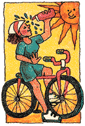
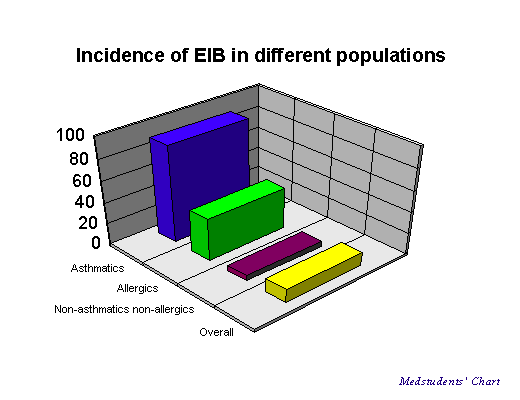
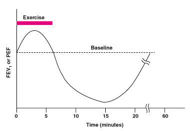
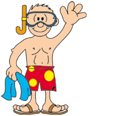

Under Construction
Under Construction

Exercise-Induced Asthma and the Use of Peppermint
Exercise-induced bronchospasm, exercise-induced bronchoconstriction and
exercise-induced asthma (EIA) are all terms used to describe the condition defined as a temporary
(transient) narrowing of the airways induced by strenuous physical exertion; EIA can be
considered as bouts of asthma with bronchospasm being the main component triggered
by exercise. EIA can differ from other kinds of asthma attacks since it frequently
involves airway constriction only with little or none of the swelling and secretions of
mucus. And so, EIA is a reversible condition in which the smooth muscle in the airways
constricts in response to physical acitivty.
(The term "exercise-induced asthma" is a misnomer , as exercise, unlike allergen
inhalation, is not known to cause asthma. Thus, the term "exercise –induced
bronchoconstriction" [EIB] may be preferred and may help remove the confusion, often
held by parents of asthmatic children, that exercise should be avoided because it worsens
the child's asthma. "Exercise-induced Bronchoconstriction: Elucidating the Roles of
Leukotrienes and Prostaglandins," PM O'Byrne, Pharmacotherapy 17 (1 PT 2): 31S-38S,
1997.)
EIA is a common problem that affects millions of people. Up to 90% of asthmatics and
40% of patients with allergic rhinitis (inflammation of the nasal mucous membrane)
have EIA. Between 6 and 13% of the normally non-asthmatic population have EIA.
Athletes with either asthma or EIA can compete to the highest level as demonstrated by
the 41 out of 67 athletes with asthma on the U.S. team who won medals at the 1984
Olympics. Also of note is that 32 of these athletes were unaware they had EIA until after
selection for the team.

EIA classically occurs near the initiation of exercise (actually may not require intensity of
exercise, personal communication of coauthor, Falkner) and bronchoconstriction occurs
5-15 minutes after exercise is finished and is usually is over within 30 minutes of the start
of the attack. The symptoms may include: wheezing, chest tightness, coughing, chest pain
and prolonged shortness of breath.

If medication is needed – short-acting beta2-agonists have long been the mainstay and
first line of treatment for EIA. Peppermint with its active ingredient menthol has smooth
muscle relaxant properties and has been effectively used in the
treatment of Irritable
Bowel Syndrome, (IBS).
It has been reported that menthol has a similar relaxing effect on the airway smooth
muscle in patients with mild asthma Tamaoki J, Chiyotani A, Sakai A, Takemura H,
Konno (Effect of menthol vapor on airway hyper-responsiveness in patients with mild
asthma. Resp. Med. 89: 503-4, 1995). When peppermint is taken in the form of mint -
staying in the mouth for a longer period of time – the menthol then vaporizes slowly and
is then inhaled into the respiratory system, arriving at various sites along the respiratory
tract in sufficient amount to provide relief from the bronchospasms caused by strenuous
exercise.
Calcium channel blocking agents such as Nifedipine (Procardia) have been used in the
treatment of asthma and EIA. Calcium is the key to all nerve conduction signals and
muscular contraction; without it a person would not have the ability to complete the next
heartbeat or be able to breath. Inhaled menthol acts as a specific inhibitor of calcium
dependent processes by inhibiting the movement of calcium across cell membranes
affecting sensory nerve endings and smooth muscle contraction—thus may locally relax
the smooth muscle in the lungs, and facilitate breathing.
See related module -
Peppermint Use to Assist in Asthma Control.
EIA preventive measures would involve avoidance of triggers, combined with modifying
the exercise program and possibly taking some form of peppermint that can be vaporized
slowly before and even after an exercise program.
Here's a list of some preventive
measures:
- Train in a warm, humid environment. This will help to maintain warmth and moisture in
the respiratory airways.
- Wear a mask or scarf over the nose and mouth when exercising in a cool or dry
environment to retain heat and moisture.
- Breathe slowly and deeply through the nose as much as possible. The nasal passages help
to warm and humidify inhaled air before it reaches the lower respiratory tract.
- Train during a time of day when the amount of pollen and the amount of air pollution is
low. This will help to avoid some of the primary triggers of asthma and EIA.
- Develop some breathing exercises and relaxation techniques to help through the next EIA
attack. The ability to control hyperventilation will help prevent the exacerbations of EIA.
- Avoid any food that may trigger EIA, at least four hours before any type of exercise.
Research suggests that by increasing water consumption and possibly vitamins B, C and
E intake may also assist in avoiding an attack. Iron supplements have also been proposed
as a means of treatment.
- Follow daily and pre-exercise medication (and menthol/peppermint use) schedules as
recommended by your physician.
Good luck and remember exercise does not cause asthma. The aim of management of
EIA must be to ensure that exercise not be avoided. Patients with asthma including
children should exercise as much as they wish and should be encouraged by the fact that
many Olympic-caliber athletes have symptomatic asthma.
